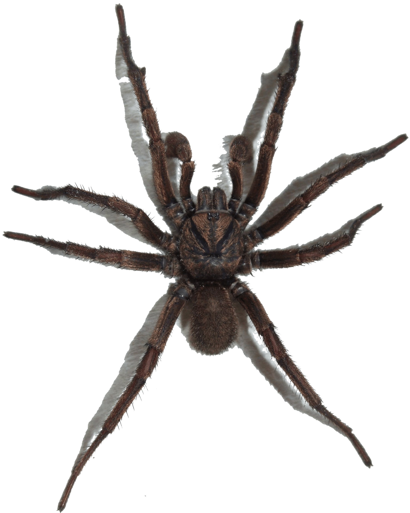
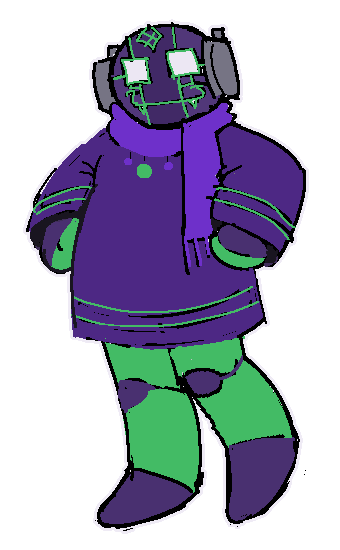

Aww~ You clicked on my little head! Congrats. I'll prettily stand in one of those flexboxes for you as a reward. If you want to know more about me, continue reading. TW for everything, spoilers for everything under the sun ::::)
If you're a nerd (you know who you are) you'll use my full, legal, government name, No Significant Harrassment. Don't do that. Or do, I'm not gonna stop you. I'm the resident nonfronter, resident freak etc etc blah blah bluh. The green one BULLIED me into fictionkinning. Bullied! So, indeed, I emerged from my cocoon as a beautiful troll and eventually ended up presenting as this thing most of the time. In terms of Homestuck, I could honestly not give less of a damn about it. Only thing I actively enjoy from it is 1. Me, 2, my quirk, and 3 Maybe Terezi. In terms of Rain World, I won't recite pearls or logs to you, but I do actually enjoy it as a source. I like the red thing. And I like Moon ;;;;P I don't think I'm really "like" either of my sources. I know, I'm special and unique like that. The green one doesn't really like me, and I'm chill with Gangle. She's chill. And you know how I am about Moon. Also, I FW Vector the Crocodile heavy. That's it that's the page. Huh? WYM I just re-summarized the page you were just on? Damn okay. Whatever. Kicks a rock. My pronouns are he/she, it if you're feeling freaky, and my gender is the world. Moon's writing this for me and the tenor's way off. But they're trying and that's beautiful so it's okay. They call me the glazer. Once I threatened Peridot with the prospect of kinning sans undertale, I just want you to know that. I didn't go through with it but you know what? I could. It's good to have threats locked n loaded though. My system role is "the hot one". It's a medical term, so be careful where you say that. Are you tired of my one-liners? Go away ::::) Moon says I'm a bad influence. I won't say that he's wrong! Hey, the thoughts had to go somewhere. This damn system's split in half, one half is nefarious no-gooders and the other half is goody two shoe syndic8. I was around during the Shadow the Hedgehog Incident. The what? What did you just say? Wow, life's hard being so beautiful---and not having to do any work, ever. Lol. Other than my job. My~ Job~ Speaking of that, I'm only really near front when Moon's in front. Maybe that's just because Peridot wards me away (and let's b real, I don't REALLY want to talk to him anyway), and I'm not too close to Gangle. Might hafta work on the ladder. Bye, for real!
 Boo! Scary yucky spider!
